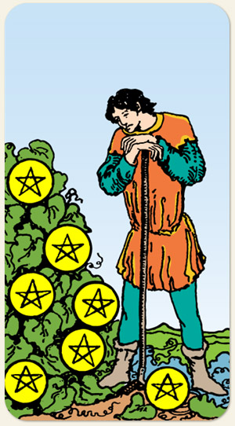

A paciência, a avaliação do progresso e a colheita adiada. O momento de pausa necessária para observar o crescimento do que foi plantado, indicando que o trabalho duro já foi feito e agora restam o tempo e a maturação. O investimento a longo prazo, a reflexão sobre os resultados, a persistência e a análise para decidir se o esforço continua valendo a pena.
O Elemento Terra representa os pés no chão e o Elemento Sete é um número espiritualizado, ou seja, a fé do Sete de Ouros é: Deus ajuda quem cedo madruga, é ser incansável para alcançar o que deseja.
Positivo: Ter orgulho do seu próprio esforço, trabalhar duro por algo que acredita, insistir para que algo dê certo.
Negativo: Trabalho sem fim, pau de arara, boia fria, dar murro em ponta de faca, não ter retorno de seus esforços, demora excessiva, esperar por algo que não vem, insistir em algo que não dá resultado. Se dedicar tanto a algo a ponto de descuidar de si, até mesmo nas coisas mais básicas do dia a dia.
Símbolos: Videira, [Postura Apoiada], Montanha, Céu Límpido, [Túnica], [Expressão], Bota de Cores Diferentes.
Cores: Amarelo, Verde, Azul, Vermelho, Laranjado, Roxo, Cinza.